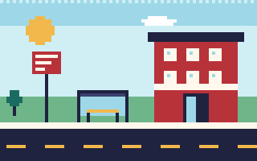
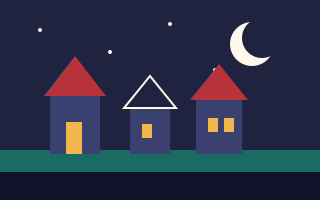
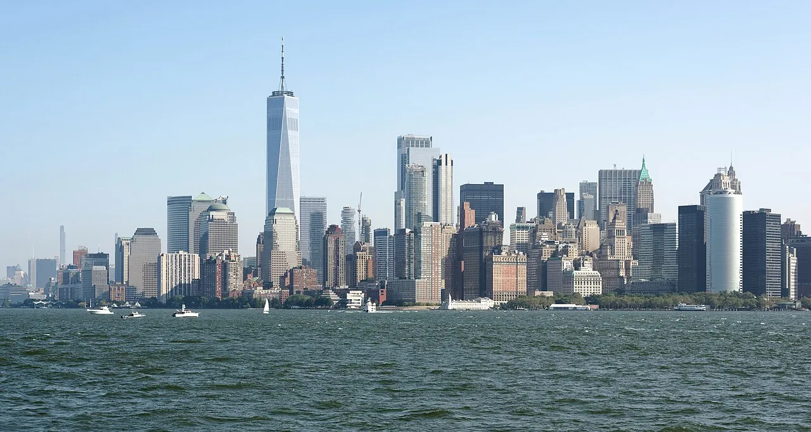

Towns of Eagleland
Compare the Towns
| Town | Vibe | Must-See | Best For |
|---|---|---|---|
| Onett | Sleepy and seaside | The hilltop lookout | Quiet first stops and sunsets |
| Twoson | Friendly and busy | The central park and department store | Shopping and meeting the locals |
| Threed | Gloomy and mysterious | The big circus tent | Ghost stories and night owls |
| Fourside | Bright and fast | The theatre district | Big-city nights and people watching |
Onett
Onett is where many journeys begin. Houses climb a green hillside above the sea, and the streets are calm enough to hear the gulls. It is a good place to slow down and get your bearings.
Walk up to the hilltop lookout at the end of the day, when the whole town turns golden. Then grab a snack and a seat near the main street and watch the evening roll in.

Twoson
Twoson is the friendliest stop on the map. A tidy central park sits at the heart of town, with a fountain that makes a handy meeting spot. Families, shoppers and street performers all pass through here.
Spend an afternoon browsing the big department store, then rest your feet in the park. Ask a local for a recommendation, because everyone has a favourite lunch spot.

Threed
Threed is the town that prefers moonlight. Crooked rooftops, long shadows and a hush in the air give it a mood unlike anywhere else in Eagleland. Locals will tell you it is perfectly safe, usually with a nervous laugh.
Look for the huge circus tent on the edge of town, and bring a flashlight. Visit with friends, and plan to leave before the fog comes in.

Fourside
Fourside is Eagleland's big city, full of tall towers, bright signs and busy sidewalks. After the quiet of the smaller towns, the pace here feels like turning the volume all the way up.
Spend the evening in the theatre district, then find a rooftop view of the skyline. It is the best place in the country for people watching.
